Префектура Ямагути · Хаги и Хофу · история
Роды Оути и Мори: как земля Тёсю подготовила героев Мэйдзи
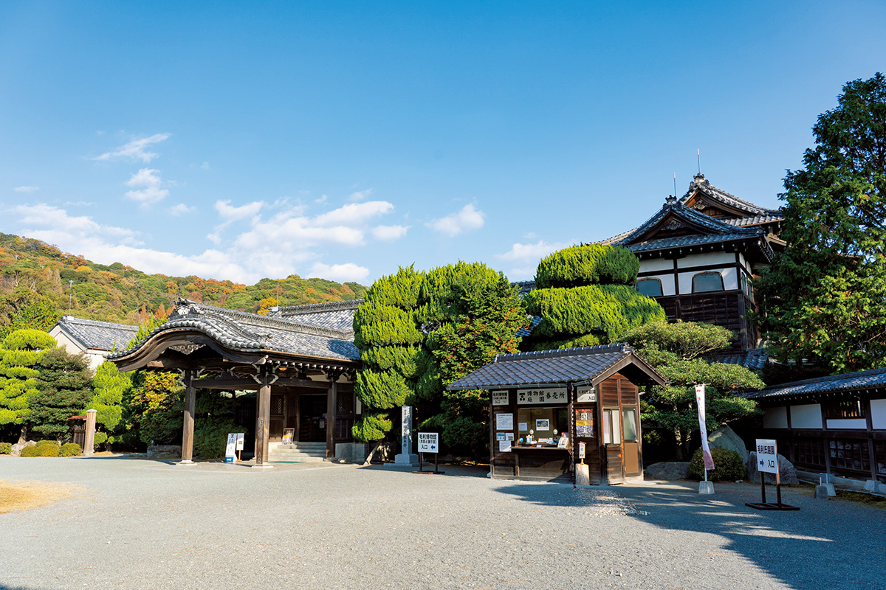
Ямагути дала Японии непропорционально много государственных умов. Разгадку рассказывают в музее рода Мори: сначала Оути, затем Мори выстроили здесь способ управлять, который столетие спустя поднял эпоху Мэйдзи.
О Ямагути вспоминают прежде всего как о земле Тёсю, старого княжества на месте нынешней префектуры. Даймё вроде Мори Мотонари (1497–1571) и сегодня известны всей стране, но раньше этими землями владел род Оути, «сильнейшие даймё Западной Японии». Два этих семейства вместе заложили основу, на которой позже выросли герои Мэйдзи.
Эпоха Муромати, два века от конца камакурского сёгуната до конца Средневековья, была временем непрерывных войн: каждый даймё расширял владения за счёт соседа, и Ямагути не была исключением. Из этой сумятицы край вывели два рода. Как они это сделали, рассказывает директор музея Мори в городе Хофу.
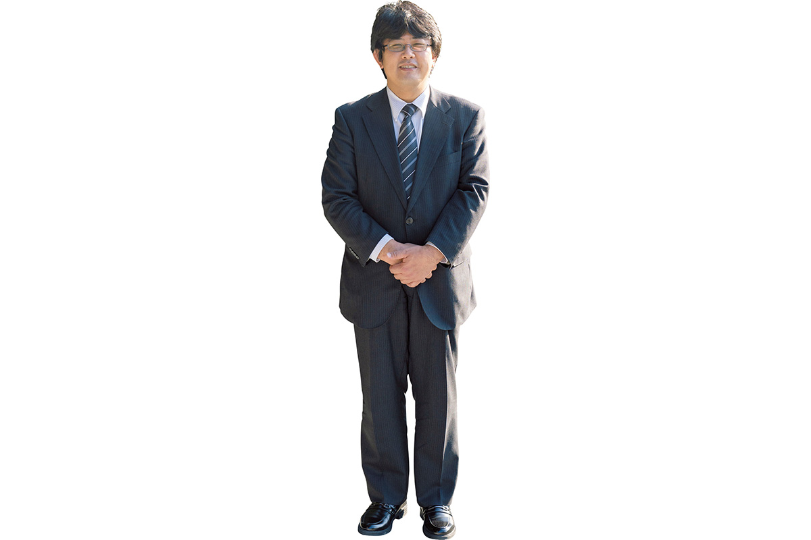
Средневековье
Два рода, построившие край
При Оути край жил в блеске так называемой культуры Оути. Род единственный в истории почти двести лет держал под контролем пролив Каммон, а после расширения владений внутри страны разбогател на торговле с Кореей и Китаем эпохи Мин: деньги превратили Ямагути в один из крупнейших городов Японии. На пике владения рода простирались от северного Кюсю до областей Бинго и Биттю в центре региона Тюгоку. Столь твёрдая хватка, объясняет директор, была возможна только на крепкой базе управления.
Оути Ёситака (1507–1551), тридцать первый глава рода, правил землями почти как независимый государь, не теряя связи и с двором сёгуна: получал от него официальные звания и права на морские поездки. Кончилось хуже: в 1551 году вассал Оути, полководец Суэ Харутака (1521–1555), поднял мятеж, и Ёситака покончил с собой в инциденте у храма Дайнэндзи. На обломках рода поднялись новые игроки.
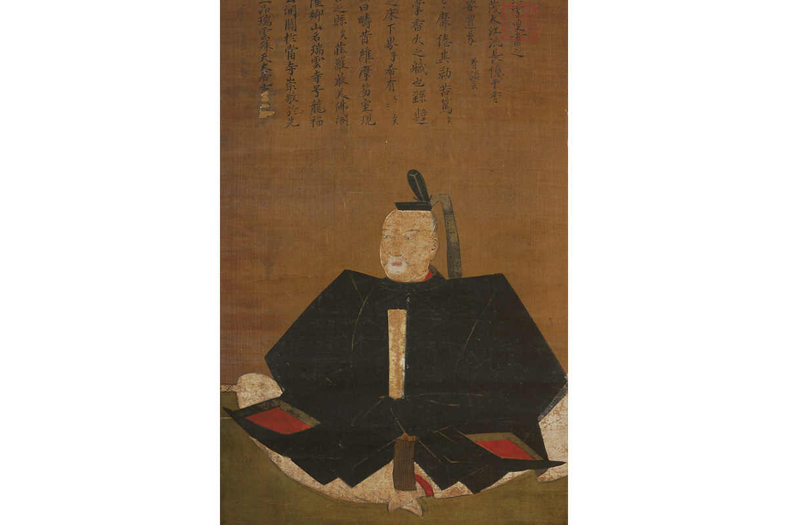
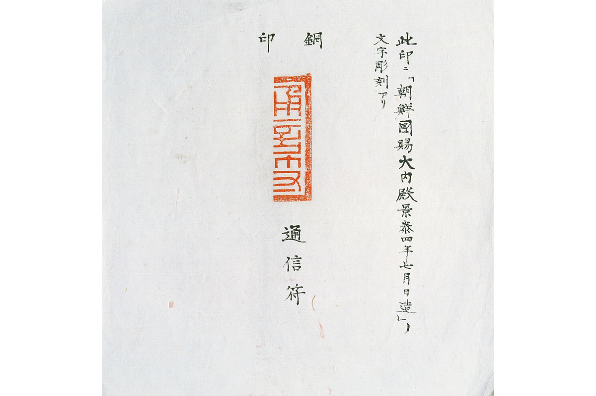
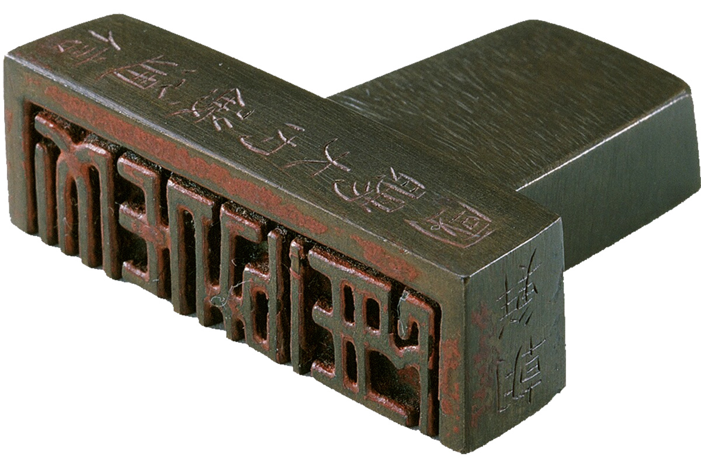
Выдвинулся Мори Мотонари (1497–1571), вассал Оути Ёсиоки и Ёситаки. До того род Мори был лишь одним из местных владетелей Аки, нынешней Хиросимы: «старостой деревни», как говорят в музее, с примерными границами владений. После падения Оути Мотонари за одно поколение поднялся до сенгоку-даймё, подчинившего десять провинций в центре Тюгоку. Строить своё государство он учился у побеждённых: техника управления Оути стала каркасом его власти, только применял её гибче.
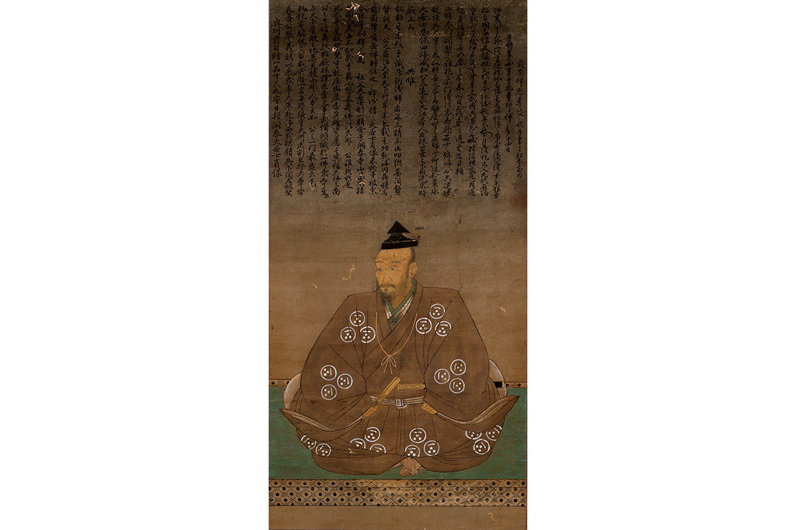
Сохранился и документ, породивший знаменитую притчу о трёх стрелах: «Письмо трём сыновьям», соглашение местных владетелей Аки, включая трёх сыновей Мотонари, о запрете бесчинств войска.
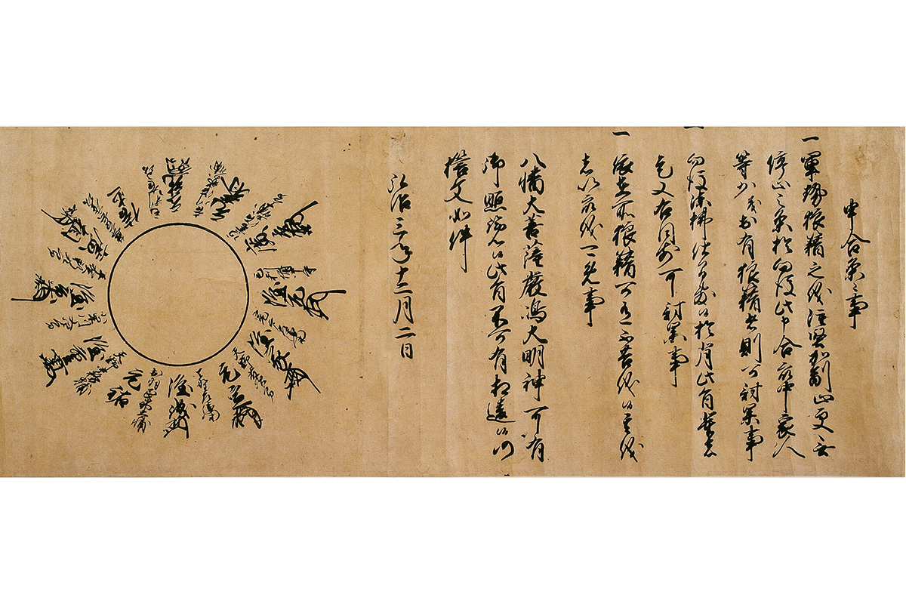
Два рода были противоположны: Оути управляли как чиновники, Мори действовали гибче. Но под обоими лежала одна и та же база, система Оути, и она пережила Средневековье. По словам директора музея, организация и лидерство, сложившиеся в Ямагути, к концу эпохи самураев отполировались до блеска: достаточно вспомнить «клан Тёсю», выходцев из этих мест, стоявших у руля нового правительства, включая премьер-министров Ямагату Аритомо (1838–1922) и Ито Хиробуми (1841–1909). Умение убеждать народ и управлять деньгами у Тёсю было заметно выше, чем у соседей, и, узнав историю двух родов, начинаешь понимать: эпоха Мэйдзи отсюда не случайна.
Мэйдзи
Эстафета из Тёсю
Реставрация Мэйдзи это переворот 1868 года, после которого власть сёгуната Токугава перешла к императорскому правительству, а Япония начала превращаться в централизованное современное государство. Отсчёт обычно ведут от 1853 года, когда эскадра американского коммодора Мэттью Перри встала на рейде Ураги, до 1877 года, когда подавили последнее самурайское восстание. Впрочем, главный хранитель музея Хаги, специалист по истории Мэйдзи, предлагает мерить шире: от прибытия русского посольства Адама Лаксмана в 1792 году прошло ровно сто лет, и все они были про превращение страны.
За новую Японию заплатили жизнями сотни людей в каждом из княжеств-победителей: знамя перенимал каждый следующий, кто уцелел. Кидо Такаёси (1833–1877), один из «трёх героев» Реставрации, был именно из Тёсю. Но почему именно в этом княжестве появлялись люди, способные мыслить государственно? Ответ хранителя: Ёсида Сёин (1830–1859), учитель, воспитавший поколение реформаторов.
Сёин получил жёсткое образование, стал наставником военного дела при княжеской школе Мэйринкан, а дальше его биография похожа на приключенческую: побег из княжества, странствия по стране, попытка тайно уплыть в Америку на корабле Перри. Человек странный и обаятельный одновременно. Расширению школы Мэйринкан в своё время помогал Мурата Кофу (1783–1855): по поручению князя Мори Такатики (1819–1871) он наводил финансы княжества и вкладывался в учение. Всё это, по словам хранителя, звенья одной цепи.
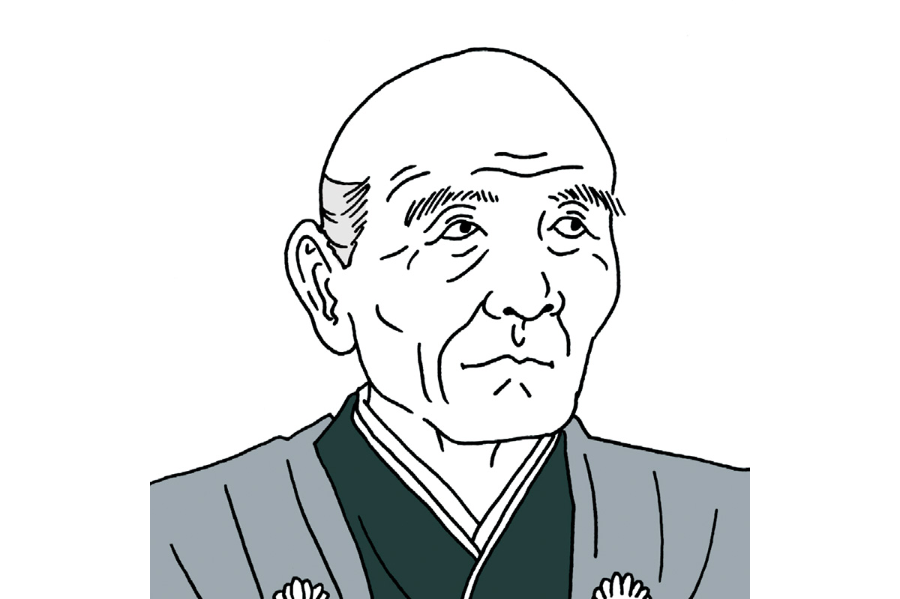
После провала американской затеи Сёина, под домашним арестом в родном доме семьи Суги, открылась школа Сёка Сондзюку: крошечный домик без учебников и расписания, где Сёин отвечал на вопросы учеников, а не гнал программу. К нему, как на магнит, стянулась любопытная молодёжь. В 1859 году Сёина казнили, ему было тридцать, но его уроки жили дальше.
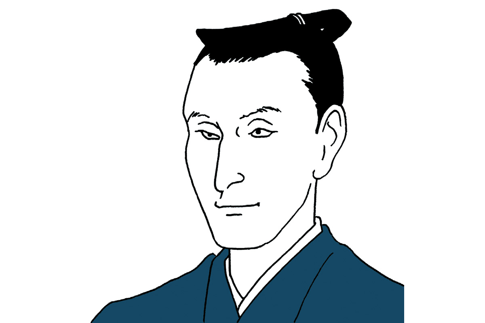
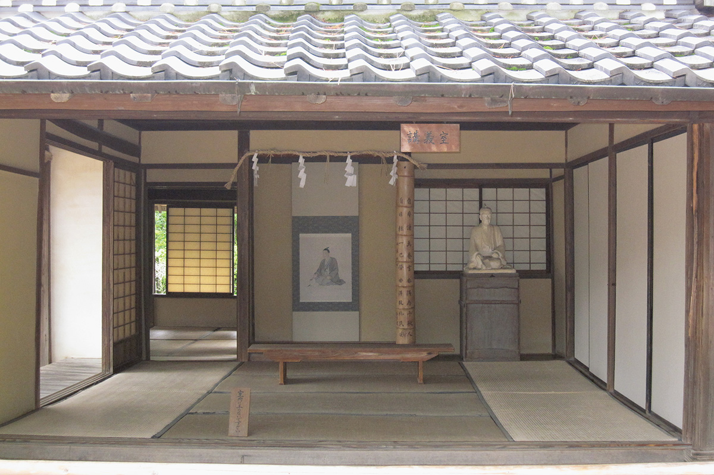
Школа Сёка Сондзюку (святилище Сёин)
- Адрес
- префектура Ямагути, город Хаги, Тинто, 1537
- Телефон
- +81 838-22-4643
- Часы работы
- осмотр свободный (здание школы только снаружи)
- Сайт
- shoin-jinja.jp
«Хаги Мэйринкан»
- Адрес
- префектура Ямагути, город Хаги, Эмукай, 602
- Телефон
- +81 838-21-0304
- Часы работы
- 9:00–17:00
- Выходные
- первый вторник февраля и следующий за ним день
- Сайт
- hagimeirin.jp
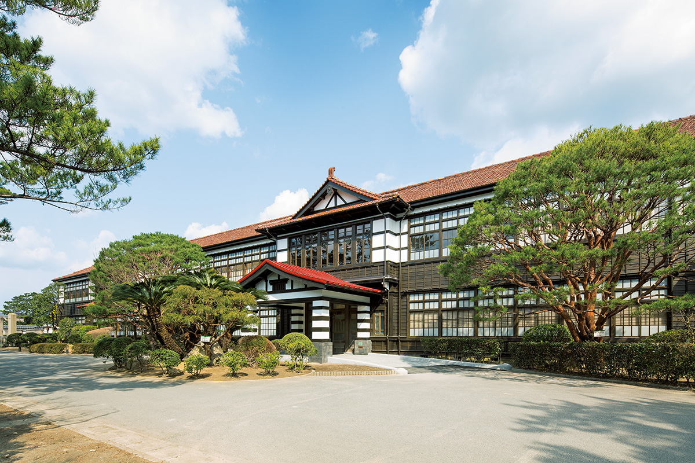
Первая эстафета ушла к Кусаке Гэндзую (1840–1864): вместе с Такасуги его звали двумя главными надеждами школы, а в 1864 году он погиб после поражения восстания у императорских ворот.
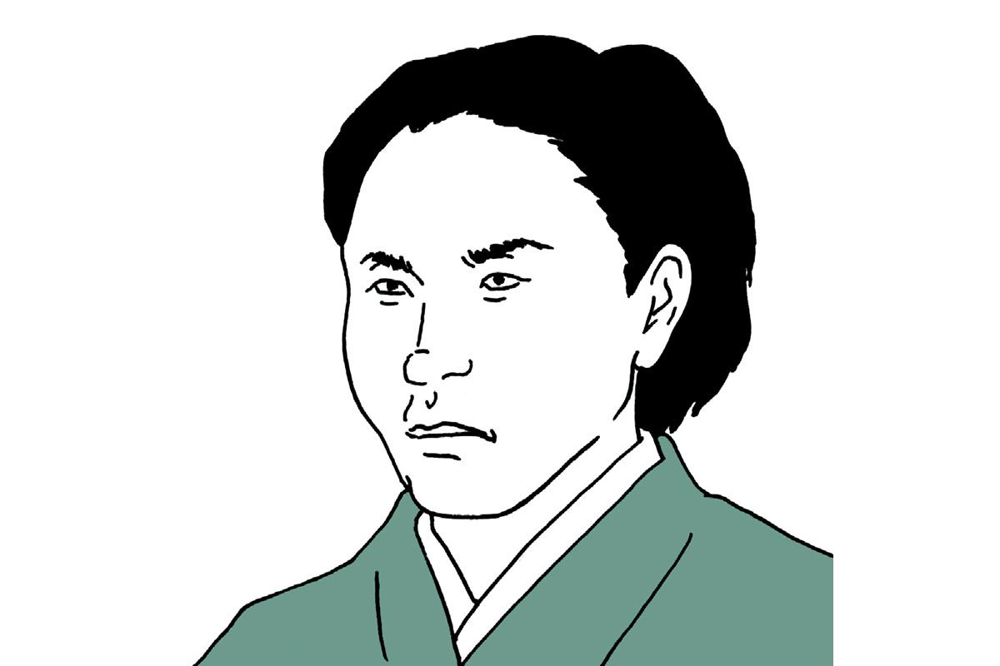
Знамя подхватил Такасуги Синсаку: в 1863 году он собрал отряды кихэйтай, позже отбил карательные экспедиции сёгуната, а в 1867 году умер от болезни.
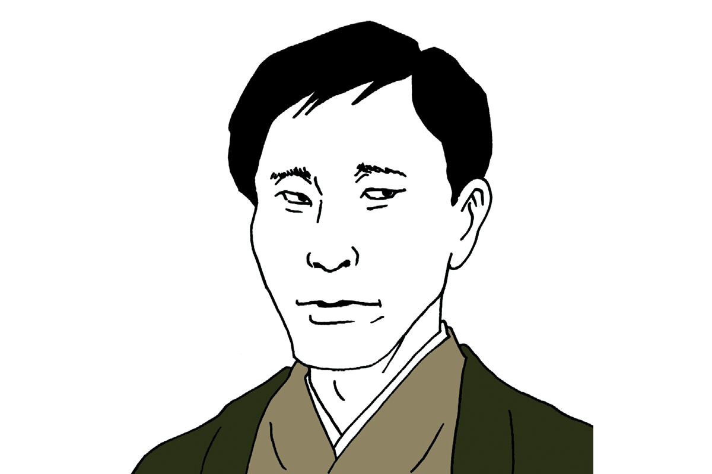
Эстафету принял Кидо Такаёси. После тех же событий его считали врагом двора, и он прятался в провинции Тадзима, пока за ним не вернулись: Ито Хиробуми, только что приехавший из Англии, сказал, что руководить остался только он. От лица Тёсю Кидо заключил союз с Сацумой, а в новом правительстве отвечал за единое государство. В январе 1868 года император Мэйдзи издал «Великий указ о восстановлении императорской власти», и новое правительство начало работу.
Путь Иноуэ Каору был отдельным приключением: в 1862 году он участвовал в сожжении британского посольства, в 1863-м уплыл с Ито на тайную учёбу в Лондон, а после возвращения занимал важные посты в новом правительстве.
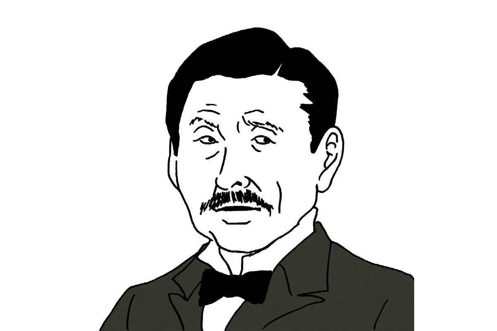
Ямагата Аритомо прошёл через отряды кихэйтай и выстроил современную японскую армию, а потом дважды становился премьер-министром.
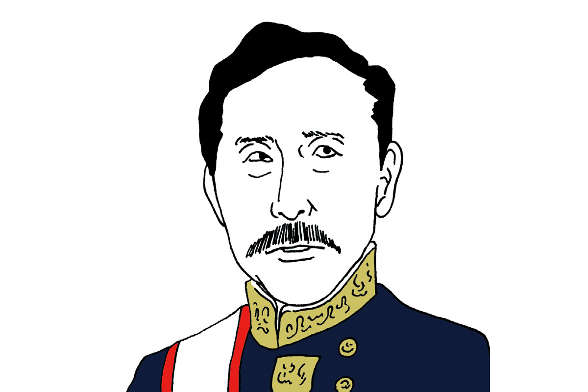
Ито Хиробуми стал первым премьер-министром Японии.
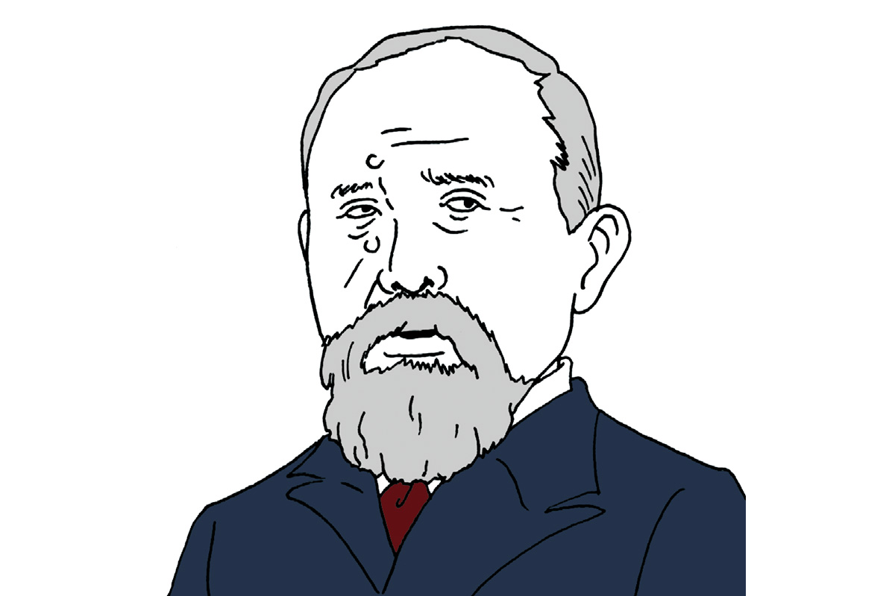
«Сёин задал исходную точку: понимать, что мир меняется, и менять его самому, считает хранитель. В основе всего лежит учение, отсюда и столько людей, вписанных в историю.»
Музей Мори
- Адрес
- префектура Ямагути, город Хофу, Татара, 1-15-1
- Телефон
- +81 835-22-0001
- Часы работы
- 9:00–17:00 (вход до 16:30)
- Выходные
- 22–31 декабря
- Цены / Вход
- взрослые 700 иен, школьники 350 иен; единый билет с садом рода Мори: взрослые 1000 иен, школьники 500 иен
- Сайт
- mohri-museum.com
Музей Хаги
- Адрес
- префектура Ямагути, город Хаги, Хориути, 355
- Телефон
- +81 838-25-6447
- Часы работы
- 9:00–17:00 (вход до 16:30)
- Выходные
- среда (если попадает на праздник, следующий будний день), новогодние каникулы
Фото: Сэйтаро Икэда.